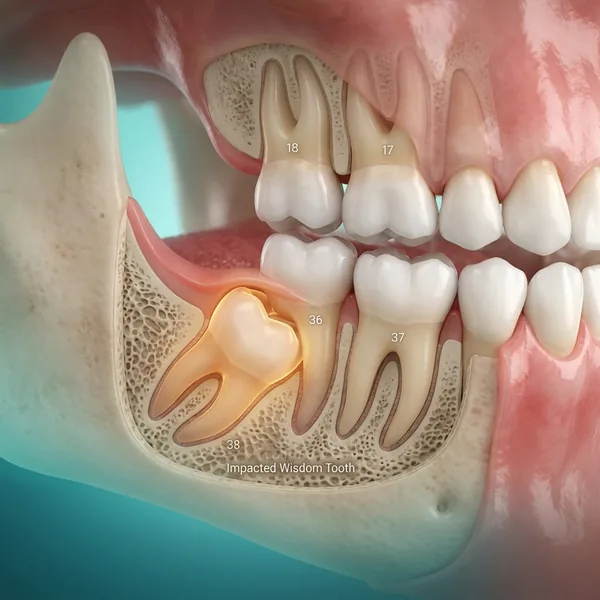

Wisdom Tooth Removal
Safe extraction of impacted or problematic wisdom teeth. Expert care, minimal discomfort, and fast recovery with our experienced oral surgeons.

Why wisdom teeth cause problems
Wisdom teeth (third molars) are the last teeth to develop, usually erupting in your late teens to early twenties. Most people don't have enough jaw space for them to grow properly.
When wisdom teeth come in at wrong angles or don't have room to erupt fully, they can become impacted, causing pain, infection, and crowding of nearby teeth. Early removal prevents complications and makes recovery much faster.
Signs you might need removal
Pain at the back of mouth
Sharp or throbbing pain at the back of your jaw, especially around the molars. This often worsens when chewing.
Swollen or inflamed gums
Gums around the back molars are tender, red, or swollen — sometimes with difficulty opening your mouth.
Jaw stiffness and limited opening
Difficulty opening your mouth wide or feeling stiffness in your jaw, making eating and speaking uncomfortable.
Crowding of other teeth
Your front teeth are becoming crowded or shifting position, pushing against other teeth and affecting your bite.
How we extract wisdom teeth
X-ray & assessment
We take advanced X-rays to see the exact position, angle, and depth of your wisdom teeth. This allows us to plan the safest extraction technique.
Treatment planning
We discuss the procedure, options (single or multiple extractions), and expected recovery time. You'll understand exactly what to expect before we begin.
Extraction procedure
Under local anaesthesia, our experienced oral surgeons carefully extract the wisdom teeth using precise techniques. The entire procedure is painless, though you may feel pressure or hear sounds.
Recovery guidance
We provide detailed post-operative instructions including medications, dietary recommendations, and activity restrictions. Most patients return to normal activities within 2 weeks.
Follow-up check
We schedule follow-up visits to ensure proper healing and address any concerns. Any stitches are removed as needed, and we monitor your recovery.
Expert surgical care
Experienced oral surgeons
Our surgeons have extensive training and experience in complex wisdom tooth extractions with proven track records of safe, successful procedures.
Minimal discomfort
Using modern techniques, precision instruments, and effective anaesthesia, we ensure your procedure is as comfortable as possible with minimal pain.
Fast recovery
Most patients experience minimal swelling and return to normal activities within 2 weeks. Our post-operative care instructions ensure smooth, speedy healing.
Comprehensive aftercare
We provide detailed instructions, medications, and follow-up care to prevent complications. Our team is available for any questions during your recovery.